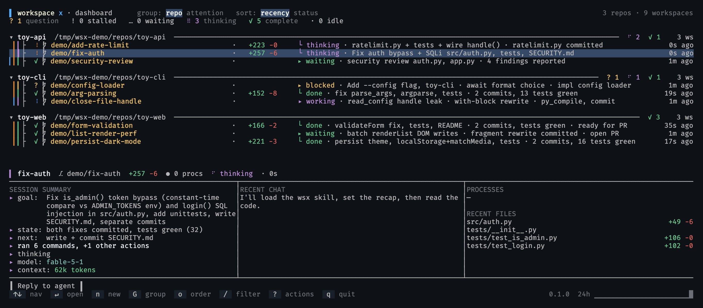

keyboard-driven · local-first · no browser, no daemon, no config server
one command in. everything after it is a keystroke.
Claude Code, Codex, oh-my-pi and Hermes agents supported out of the box. Want to add another harness? MIT licensed, Open a PR.

every session is an isolated worktree
Each agent's own CLI runs in a PTY on the subscription you already pay for. wsx never calls a model API and adds zero token usage.
Add multiple agent types to a workspace and coordinate them via the wsx CLI
Pin frequently used commands and skills to each workspace, activate with a click or keybind
Original prompt, latest agent update, git diff and workspace details, sorted so questions and stalls surface first.
Real-time diff counts and pull-request status, reflected on the dashboard and inside agent chats.
Send a workspace to your editor, a diff viewer, or lazygit without lifting your hands from the keyboard.
Split the attached view vim-style (v side-by-side, s stacked), nest freely, and save the arrangement so it restores when you re-enter the workspace.
Start a dev server from the dashboard or the chat view, then watch and kill it from the same pane.
Start sessions with tmux enabled, attach from wsx on another machine or run wsx in full fidelity tmux. Access anywhere via Tailscale.
one static rust binary · no runtime deps
The wsx and agent-review skills install during setup.
two short sessions, unedited
$ git clone https://github.com/bakedbean/workspacex